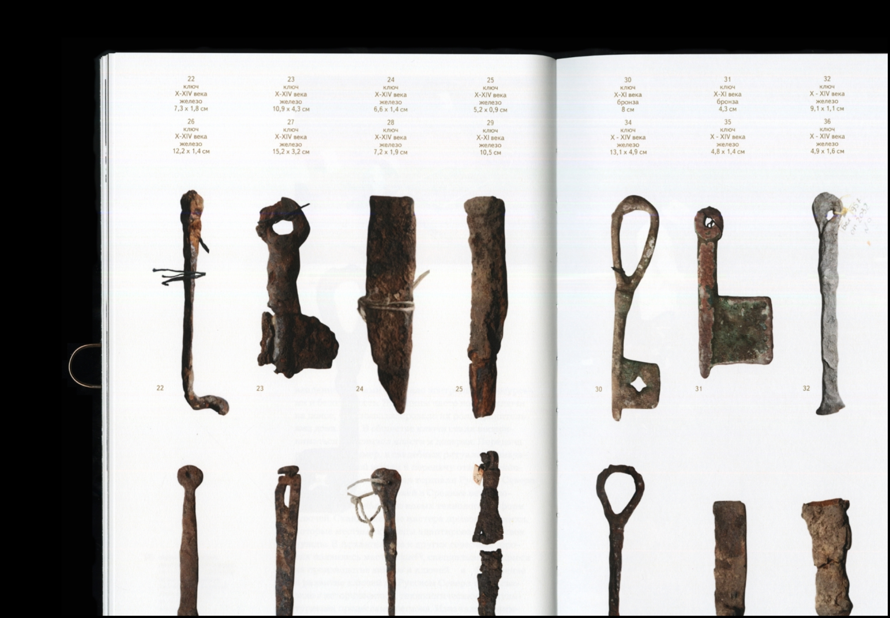
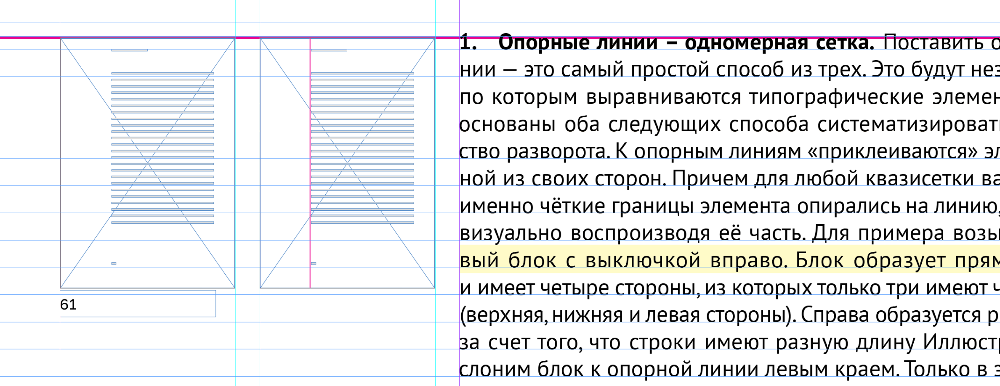
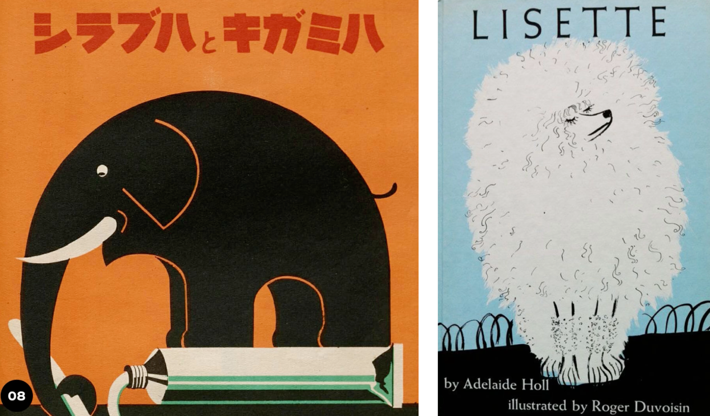

Картинки
В этой статье мы рассмотрим несколько основных способов размещения иллюстраций в книге относительно текстового блока, а также обратим внимание на то, как нужно их размещать относительно направляющих в тексте, чтобы макет был более чистым и ровным. Как и где обычно располагают подписи для фотографий, а также как подобрать шрифт под иллюстрацию.
Положение в макете
Открыто (рис. 1, а)
Иллюстрация располагается сверху или снизу текстового блока. Это делает её визуально отделённой от текста и более заметной.
Закрыто (рис. 1, б)
Иллюстрация находится между частями текста. Это позволяет разместить её максимально близко к соответствующему тексту.

←
1
Способ расположить фото
В оборку (рис. 1, в-д)
Иллюстрация находится между частями текста. Это позволяет разместить её максимально близко к соответствующему тексту.
- Открытая оборка (рис. 1, в) — иллюстрация находится в углу страницы и окружена текстом с двух сторон.
- Закрытая оборка (рис. 1, г) — текст обрамляет иллюстрацию с трёх сторон.
- Глухая оборка (рис. 1, д) — текст окружает иллюстрацию со всех четырёх сторон.
На полях (рис. 1, е)
Тоже подходит для миниатюрных изображений. Такое расположение связано с дополнительным расходом бумаги, так как требует увеличения ширины полей.
На полосе или развороте (рис. 1, ж)
Этот метод создаёт эффект погружения, но требует точной настройки при печати, чтобы важные детали изображения не оказались в зоне обреза или на корешковом сгибе.
Подписи
Как соседствуют со сносками, где они будут занимать меньше места. Насколько большие подписи

←
2
Подпись для фото и сноска из текста
Сноскам выделили отдельную колонку, а подписи располагаются двумя способами: под фотографией или в отдельном ряду сверху или снизу макета
Иногда подписям выделяют отдельный ряд или колонку, когда их не слишком много и дизайнер точно уверен, что выделенного места хватит. Нужно также учитывать то, что подписи могут быть разными по объему: как они в этом случае соотносятся, можно ли переносить подпись?

←
3
Подписи в отдельном ряду
В некоторых изданиях подписи всегда располагаются в отдельном ряду или колонке

←
4
Можно комбинировать разные варианты в одном макете
Выравнивание
Если изображение находится около текста, то верхнюю границу стоит равнять по базовой линии шрифта или x-heigh шрифта (об этих линиях мы говорили в главе Шрифт). Пример: начинается абзац, а нам нужно поставить фотку. Ставим ее по базовой линии первой строки, не по высоте прописной. Когда под обрез – разрываем мир книги важные элементы изображения не подводить к краям книги + не ставить на корешковый сгиб

←
5
Выравнивание по высоте прописной буквы
Сочетание со шрифтом
Когда изобразительный материал книги состоит из фотографий, шрифт не сильно спорит с изображениями, а скорее придает им дополнительный оттенок. Сложности возникают в тех случаях, когда книга состоит из иллюстраций, графических работ с ярко выраженным характером. Потому что у таких изображений есть пластика штриха, с которой пластика шрифта может не сочетаться. Давайте посмотрим, по какому принципу можно подобрать шрифт в этом случае.

←
6
Очень удачные примеры сочетания шрифта и иллюстрации
Выше ты можешь увидеть два очень классных примера. В иллюстрации со слоном нет тонких линий, там используются плашечные заливки, и по такому же принципу подобран шрифт. Во второй картинке с собачкой используется леттерин, похожий на ленточную антикву (антиква с едва наметившимися засечками). На этой иллюстрации тонкие линии пристутсвуют в шерстке собачки, поэтому ему в пару олично подошел шрифт с засечками.

←
7
Один и тот же инструмент для создани иллюстрации и леттеринга
В случае если в книге немного текста, например это детская книга, можно рассмотреть вариант нарисовать буквы от руки. В этом случае мы не используем шрифт, а создаем так называемый леттеринг. На рисунке 7 все написано одним инструментом – карандашом. На рисунке 8 можно увидеть шрифт фаворского с его фирменными иллюстрациями. Они отлично сочетаются по пластике и по эпохе. Если леттеринг для твоего случая не вариант, стоит обратить свое внимание на эпоху, к которой относятся иллюстрации, и подобрать шрифт из того же времени.

←
8
Совпадение эпохи, пластики иллюстрации и шрифта